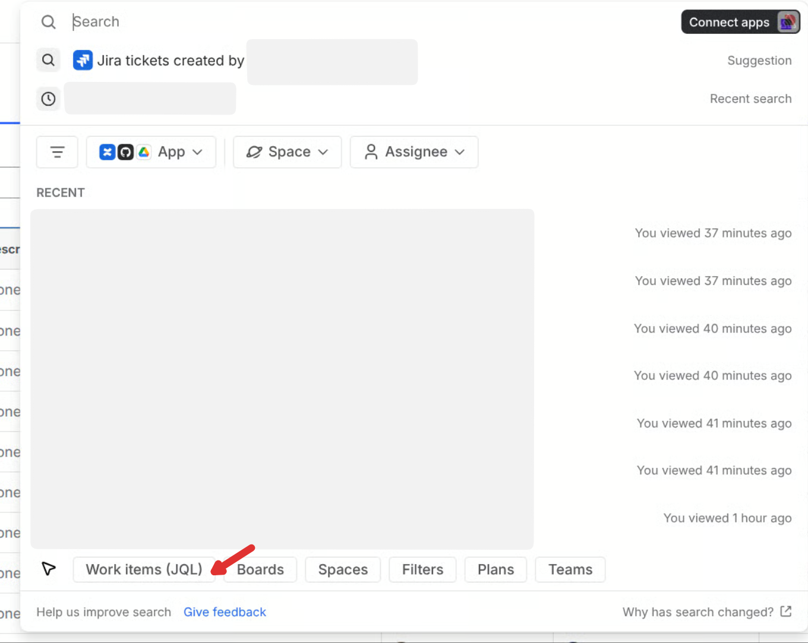
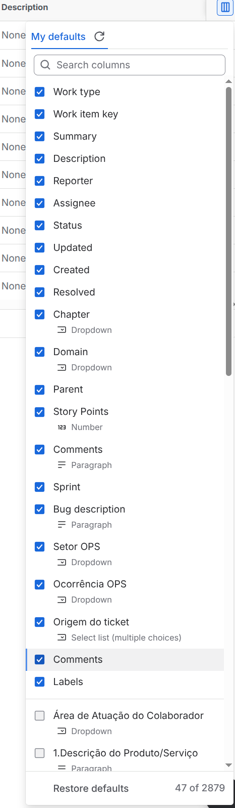
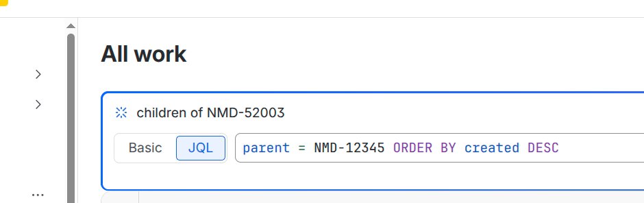
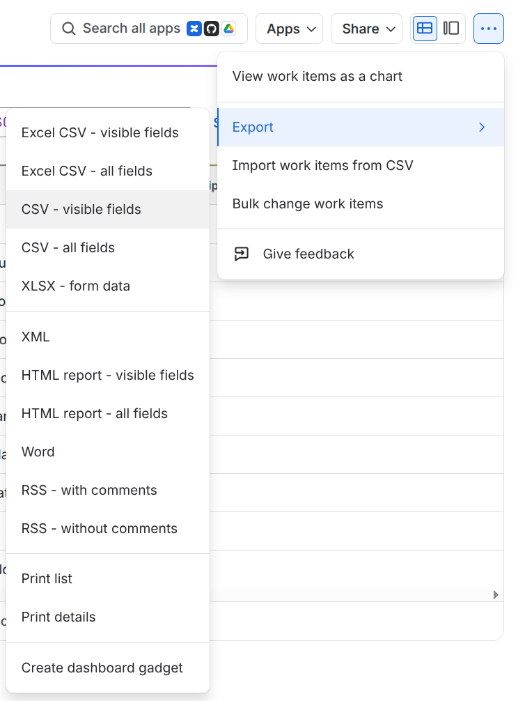
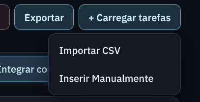
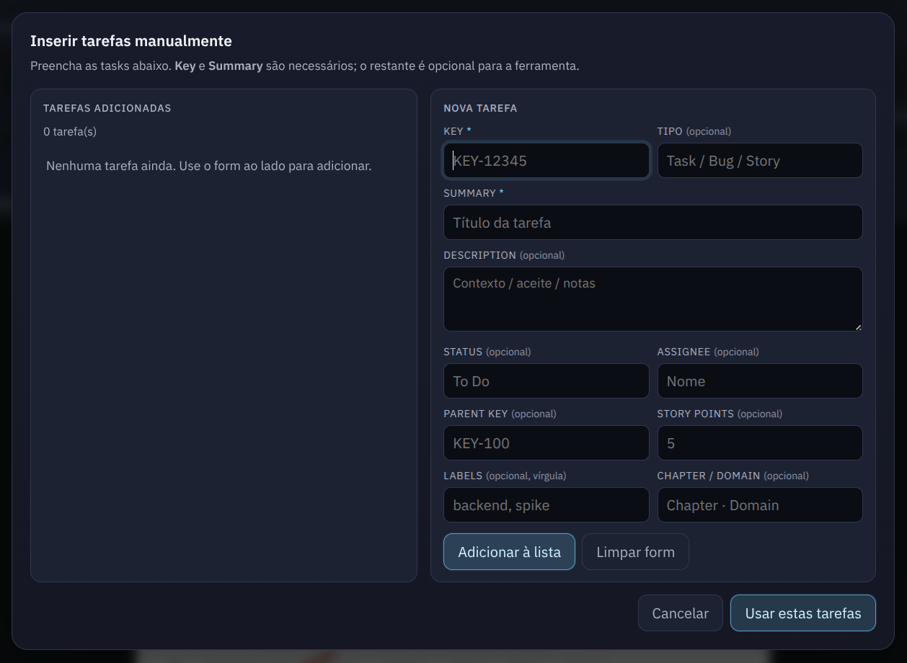

Importar CSV com tasks a refinar
Use Carregar tarefas → Importar CSV ou insira manualmente.
Clique na matriz: linha é complexidade, coluna é incerteza. Use + Carregar tarefas para importar CSV ou inserir manualmente.
Necessário para links das tasks e a instrução de atualização no Jira. Será salvo no navegador e na URL como jiraUrl.
Selecionar na matriz foca a banda · área destacada = P40–P95 · direita = zoom da banda · scroll no geral
Para uma tarefa P comum:
Quando dizemos que a complexidade é P, precisamos balizar essa medida em um grau de confiança, que é a Incerteza.
Quanto maior a incerteza, mais perto estamos de 5 dias; quanto menor, mais perto estamos da média (e talvez abaixo dela até).
Ou seja
Carregando visualização…
O que é cada eixo, como ler a matriz e a regra de ouro
quanto trabalho técnico existe
quanto você não sabe ainda
| Baixa incerteza (sei o que fazer) |
Alta incerteza (ainda não sei) |
|
|---|---|---|
| Alta complexidade |
📦 Task grande, mas previsível Quebre em subtasks menores e estime. | 🔬 Spike / POC antes de estimar Timebox fixo; entrega entendimento, não código. |
| Baixa complexidade |
✅ Task pequena, pode entregar logo Escreve a task e faz. | 🔍 Investigar, depois fatiar Muitas vezes a task some depois que você entende. |
Incerteza alta bloqueia estimativa. Complexidade alta só pede decomposição.
Se você não consegue estimar uma task, o problema quase sempre é incerteza — não complexidade. A solução não é estimar “maior”, é reduzir a incerteza primeiro.
1) Exportar do Jira: abra a lista certa com o link abaixo, escolha as colunas, confira a JQL e exporte CSV · visible fields. Depois use + Carregar tarefas → Importar CSV (ou Inserir Manualmente).
2) Atualizar no Jira: depois de estimar, o texto/CSV/JSON abaixo ficam prontos para colar num agente com MCP/Jira.
Edite os campos abaixo; alterações refletem na aba Estimar e no export. Type e Status são listas (não texto livre).
| Key | Summary | Type | Status | Assignee | Parent | SP | Labels | Estimativa |
|---|
Nenhuma tarefa carregada. Use + Carregar tarefas na aba Estimar.
No Jira, use a busca e clique em Work items (JQL) — ou use o botão Abrir lista no Jira acima, que já cai na página com a JQL da prop.

Em Columns → My defaults, deixe visíveis pelo menos: Work item key, Summary, Description, Status, Assignee, Reporter, Parent, Story Points, Labels, Sprint, Chapter, Domain, Created, Updated, Resolved.

No modo JQL, use a query da prop jiraJql (ex.: parent = KEY-123 ORDER BY created DESC). Ajuste o parent da epic/task-pai se precisar.

Clique em ⋯ → Export → CSV - visible fields.

Volte à aba Estimar e clique em + Carregar tarefas. Escolha Importar CSV (arquivo exportado do Jira) ou Inserir Manualmente.

No modal Inserir tarefas manualmente, preencha pelo menos Key e Summary (obrigatórios), use Adicionar à lista e confirme com Usar estas tarefas.

Copie este texto (Exportar → Copiar texto) e cole em uma ferramenta de AI como Cursor ou Claude com o MCP do Jira (Atlassian Rovo MCP) conectado. O agente usa essa conexão para aplicar comentários, labels, story points e tempo nas tasks.